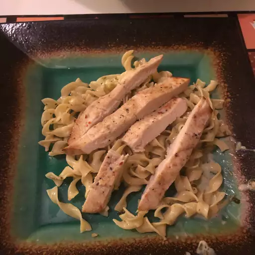

Jerk Chicken and Pasta

Jerk Chicken and Pasta has become one of my favorite quick and easy recipes to make, my girlfriend introduced me to the recipe and I've been
addicted ever since I first had it, here's how to make it and what you'll need to make it a success!
You'll need the following
- Pasta noodle of your choosing (I like rotini or penne)
- Jamacian Jerk Seasoning
- One Chicken Breast
- One jar of Alfredo sauce (Classico makes a really good one
- Optional Liquid Chicken Stock
LETS GET STARTED
- To start, half fill a pot of water and set it to boil on the stovetop (Add a lid to the pot to speed up the boiling process)
- While that boils, add a saucepan to the stove top on medium heat with some little bit oil of your choosing
- Prepare your chicken breast and cut into strips
- Lather your chicken in 5 shakes of the jamacian jerk seasoning
- Add your seasoned chicken to the saucepan and if you're using the chicken stock, add desired amount to bottom of pan, cover your chicken pan
- Your water should be boiled, now you may add your desired amount of noodles
- Continue monitoring your chicken, add more seasoning or stock if desired
- Once your noodles are done, drain and set aside
- Once you chicken is done, lower heat to medium-low and add the jar of alfredo sauce
- Give your chicken and alfredo 3-5 shakes of the jamacian jerk seasoning
- Drop the heat to low and mix your noodles with the chicken and alfredo mix, add more seasoning if desired (I like a shake or two)
- Plate your newly made food and enjoy!